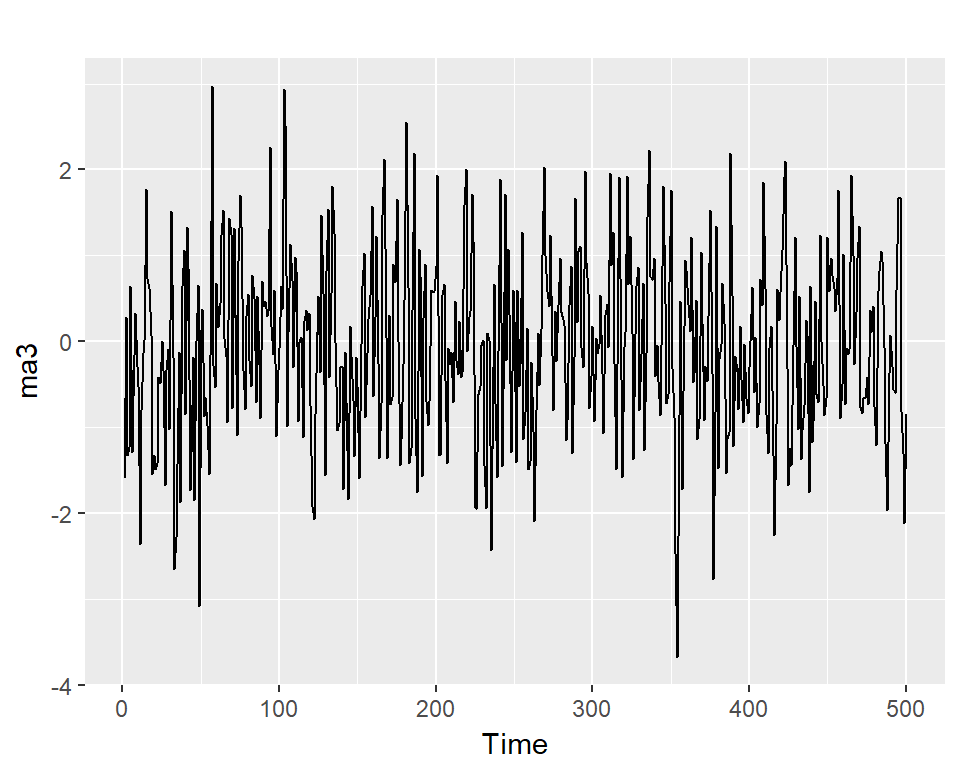
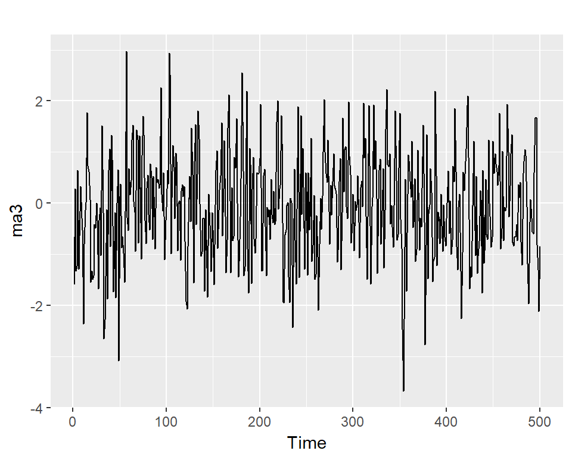
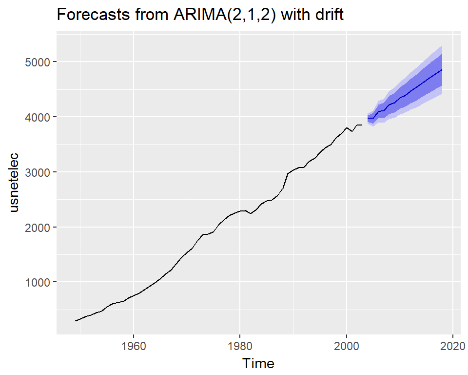

Time Series Analysis
Xavier Bouteiller
March 28, 2020
Needed packages
What is a time series ?
- Sequence of data in chronological order
- Often sequentially recorded
year value
----- ------
1992 10.14
1993 8.94
1994 12.07
1995 8.49
1996 9.41
1997 8.18
1998 10.86The R ts() object
data1=rnorm(12*2)
tsdata1=ts(data1, start=2000, frequency=1)
autoplot(tsdata1)+geom_point()+geom_line()
Sampled annualy from 2000
data1=rnorm(12*2)
tsdata1=ts(data1, start=2000, frequency=12)
autoplot(tsdata1)+geom_point()+geom_line()
Sampled monthly from 2000
Components of a time series
- trend
- seasonality
- noise
\[y_{t} = T_{t} + S_{t} + R_t\]
Examples


Decompose a time series
https://otexts.com/fpp2/decomposition.html
- Moving Average (rolling mean) i.e. the classical decomposition
- Many other algorithms developped (SEATS, STL, X11)
- Exponential smoothing (loess, spline …)
Moving Average (rolling mean)
## Jan Feb Mar Apr May Jun Jul Aug Sep Oct Nov Dec
## 1973 62.2 63.4 62.2 59.0 55.6 51.0 46.2 41.4 38.4 38.0
## 1974 40.6 43.8 49.4 52.0 52.8 50.8 48.4 43.6 39.6 34.8 31.6 30.2
## 1975 32.2 37.0 43.6 48.0 51.4 53.2 51.6 49.4 48.4 46.0 43.6 45.0
## 1976 46.8 50.0 53.2 56.2 57.0 57.8 57.0 57.0 55.6 53.6 53.2 55.2
## 1977 61.0 67.4 73.6 77.0 76.2 74.2 72.2 69.2 65.4 62.8 59.4 57.8
## 1978 60.2 66.2 72.0 76.0 77.0 76.4 73.0 71.0 66.2 62.6 58.8 56.8
## 1979 57.4 61.2 64.8 66.8 68.0 67.0 64.6 61.8 57.4 51.6 46.6 43.4
## 1980 41.4 40.4 42.2 43.6 45.8 49.2 52.0 52.4 50.2 45.8 41.0 39.0
## 1981 39.6 40.6 43.0 43.2 42.4 39.4 36.2 33.0 30.8 29.4 28.2 28.4
## 1982 29.8 30.8 32.2 33.4 33.8 33.8 35.2 36.0 37.0 37.4 39.0 40.4
## 1983 43.8 47.8 54.0 57.0 58.0 56.6 54.4 51.8 49.0 48.4 48.8 50.8
## 1984 53.2 56.4 58.6 59.8 58.6 55.6 54.0 53.2 50.0 47.2 47.2 47.6
## 1985 50.0 53.6 59.0 62.4 64.0 62.8 61.6 59.0 56.2 53.0 51.8 52.8
## 1986 60.2 66.8 72.4 74.6 74.2 66.8 62.0 57.8 54.2 52.6 52.8 52.6
## 1987 56.4 61.2 63.8 64.8 64.0 60.6 56.6 54.6 51.6 48.0 45.4 46.0
## 1988 49.2 54.2 59.6 64.0 64.4 62.6 59.8 58.4 54.0 51.0 49.6 49.0
## 1989 49.2 52.6 56.4 57.6 59.8 60.4 58.2 56.2 54.0 49.6 46.4 46.6
## 1990 48.0 49.0 51.0 52.0 51.2 48.8 46.0 43.4 40.2 36.8 33.6 34.0
## 1991 35.8 38.2 41.8 45.2 45.8 45.8 44.0 42.8 41.2 39.8 40.2 43.8
## 1992 46.8 49.6 52.8 53.8 53.2 53.2 52.8 52.0 49.8 47.8 45.4 45.2
## 1993 47.6 52.4 55.6 58.6 59.6 59.0 57.2 56.8 55.6 54.8 52.4 52.6
## 1994 56.2 58.6 61.4 63.4 62.2 59.2 57.0 55.4 53.4 51.0 48.6 47.2
## 1995 47.8 50.4 55.0 58.4 61.8 62.4 61.8 60.0 56.0Moving Average (rolling mean)
Classical decomposition
- step 1: trend with rolling mean \(\hat{T}_t\)
- step 2: detrend \(y_t - \hat{T}_t\)
- step 3: seasonal component by simply average the detrended values for that season \(\hat{S}_t\)
- step 4: residuals \(\hat{R}_t = y_t - \hat{T}_t - \hat{S}_t\)
Classical decomposition
Exercises
Plot and decompose the following TS: - ausbeer - elecequip - AirPassengers
Stationary Time Series
Stationary Time Series
A TS is stationary if is parameters are stable over time:
- Trend is zero (linear, log, exp, periodic…)
Stationary Time Series
A TS is stationary if is parameters are stable over time:
- Trend is zero (linear, log, exp, periodic…)
- variance is constant
Stationary Time Series
A TS is stationary if is parameters are stable over time:
- Trend is zero (linear, log, exp, periodic…)
- variance is constant
- autocorrelation is constant
ACF and PACF
lagged correlation
correlation at lag 1: \(corr(y_t,y_{t-1})\)
## [1] 0.9442214correlation at lag 2: \(corr(y_t,y_{t-2})\)
## [1] 0.8605691ACF plot
PACF plot
- PACF is the corr between TS & the lagged version of itself after we substract the effect of corr at smaller lag
- So is the correlation associated with just that particular lag
## ACF PACF
## [1,] 0.86 0.86
## [2,] 0.67 -0.24
## [3,] 0.47 -0.13
## [4,] 0.34 0.13
## [5,] 0.28 0.15
## [6,] 0.24 -0.13
## [7,] 0.22 0.09
## [8,] 0.22 0.09
## [9,] 0.30 0.33
## [10,] 0.43 0.27
## [11,] 0.55 0.02
## [12,] 0.61 -0.01
## [13,] 0.52 -0.32
## [14,] 0.37 -0.09
## [15,] 0.20 -0.13
## [16,] 0.08 -0.02
## [17,] 0.01 -0.06
## [18,] -0.07 -0.13
## [19,] -0.10 0.02
## [20,] -0.12 -0.08
## [21,] -0.05 0.12
## [22,] 0.08 -0.02
## [23,] 0.18 -0.02
## [24,] 0.24 0.05
## [25,] 0.17 -0.13
## [26,] 0.03 -0.15
## [27,] -0.12 -0.06
## [28,] -0.23 0.02
## [29,] -0.29 -0.01
## [30,] -0.35 -0.01
## [31,] -0.37 0.05
## [32,] -0.37 -0.04
## [33,] -0.30 0.02
## [34,] -0.18 -0.04
## [35,] -0.09 -0.14
## [36,] -0.05 -0.02
## [37,] -0.13 -0.17
## [38,] -0.24 -0.07
## [39,] -0.37 -0.01
## [40,] -0.44 0.08
## [41,] -0.47 0.02
## [42,] -0.52 -0.07
## [43,] -0.51 0.06
## [44,] -0.50 -0.06
## [45,] -0.42 -0.10
## [46,] -0.30 0.05
## [47,] -0.18 0.06
## [48,] -0.12 -0.05On stationary TS
On non stationary TS
On real TS

Stationarize a time series
- log transform
- square root transform
- differencing \(y'_t = y_t - y_{t-1}\)
- n differencing \(y'_t = y_t - y_{t-n}\)
- combine methods
Example 1
Example 2
Example 3
Exercices
Try to stationarize several TS
- ausbeer
- elecequip
- h02
- co2
Assess results visualy and using A/Pacf
AR model
correlation with previous value(s)
lag 1
\[ y_{t} = c + \phi_{1}y_{t-1} \]lag 2
\[ y_{t} = c + \phi_{1}y_{t-1} + \phi_{2}y_{t-2} \]lag n
\[ y_{t} = c + \phi_{1}y_{t-1} + \phi_{2}y_{t-2} + \dots + \phi_{p}y_{t-p} + \varepsilon_{t}\]
simulate AR model
A/Pacf
MA model
correlation with past error value(s)
lag 1 \[y_{t} = c + \varepsilon_t + \theta_{1}\varepsilon_{t-1} \]
lag 2 \[ y_{t} = c + \varepsilon_t + \theta_{1}\varepsilon_{t-1} + \theta_{2}\varepsilon_{t-2} \]
lag n \[ y_{t} = c + \varepsilon_t + \theta_{1}\varepsilon_{t-1} + \theta_{2}\varepsilon_{t-2} + \dots + \theta_{q}\varepsilon_{t-q}\]
simulate MA model
ma1=arima.sim(model=list(order=c(0,0,1), ma=0.5),500)
ma3=arima.sim(model=list(order=c(0,0,3), ma=c(0.5,-0.3,0.1)),500) 

A/Pacf
ARMA model
Combining AR and MA models
- for stationary TS
\[y_{t} = c + \phi_{1}y_{t-1} + \cdots + \phi_{p}y_{t-p} + \theta_{1}\varepsilon_{t-1} + \cdots + \theta_{q}\varepsilon_{t-q} + \varepsilon_{t}\]
ARMA(p, d, q)
- p: order of the autoregressive part
- d: degree of first differencing involved 0 for ARMA model
- q: order of the moving average part
Example
estimate
## $fit
##
## Call:
## stats::arima(x = xdata, order = c(p, d, q), seasonal = list(order = c(P, D,
## Q), period = S), xreg = xmean, include.mean = FALSE, transform.pars = trans,
## fixed = fixed, optim.control = list(trace = trc, REPORT = 1, reltol = tol))
##
## Coefficients:
## ar1 ar2 ma1 xmean
## 0.8898 -0.5022 0.8751 -0.0255
## s.e. 0.0405 0.0404 0.0223 0.1374
##
## sigma^2 estimated as 1.009: log likelihood = -713.66, aic = 1437.32
##
## $degrees_of_freedom
## [1] 496
##
## $ttable
## Estimate SE t.value p.value
## ar1 0.8898 0.0405 21.9909 0.000
## ar2 -0.5022 0.0404 -12.4339 0.000
## ma1 0.8751 0.0223 39.2122 0.000
## xmean -0.0255 0.1374 -0.1854 0.853
##
## $AIC
## [1] 2.874634
##
## $AICc
## [1] 2.874796
##
## $BIC
## [1] 2.91678Select the Best model 1
AIC or BIC scores The lower the better
## [1] 2.874634## [1] 2.92724Select the Best model 2
AIC or BIC scores The lower the better
| p | q | AIC | BIC |
|---|---|---|---|
| 0 | 0 | 4.60 | 4.62 |
| 0 | 1 | 3.51 | 3.53 |
| 0 | 2 | 2.99 | 3.02 |
| 0 | 3 | 2.91 | 2.95 |
| 1 | 0 | 3.96 | 3.98 |
| 1 | 1 | 3.13 | 3.16 |
| 1 | 2 | 2.94 | 2.98 |
| 1 | 3 | 2.92 | 2.97 |
| 2 | 0 | 3.31 | 3.34 |
| 2 | 1 | 2.87 | 2.92 |
| 2 | 2 | 2.88 | 2.93 |
| 2 | 3 | 2.87 | 2.93 |
| 3 | 0 | 3.14 | 3.18 |
| 3 | 1 | 2.88 | 2.93 |
| 3 | 2 | 2.88 | 2.94 |
| 3 | 3 | 2.87 | 2.94 |
Auto estimate parameters
## Series: arma21
## ARIMA(2,0,1) with zero mean
##
## Coefficients:
## ar1 ar2 ma1
## 0.8898 -0.5022 0.8751
## s.e. 0.0405 0.0404 0.0223
##
## sigma^2 estimated as 1.015: log likelihood=-713.68
## AIC=1435.35 AICc=1435.43 BIC=1452.21Forecasting with ARMA
## $pred
## Time Series:
## Start = 501
## End = 520
## Frequency = 1
## [1] 2.739977120 1.600180426 0.032217155 -0.790511027 -0.735149702
## [6] -0.272740605 0.110889019 0.220016239 0.124464583 -0.015353567
## [11] -0.091774010 -0.089556668 -0.049207565 -0.014420261 -0.003730295
## [16] -0.011688064 -0.024136725 -0.031216808 -0.031264973 -0.027752408
##
## $se
## Time Series:
## Start = 501
## End = 520
## Frequency = 1
## [1] 1.004380 2.037335 2.302512 2.303412 2.353187 2.397858 2.403745 2.405135
## [9] 2.410265 2.412288 2.412305 2.412664 2.413022 2.413075 2.413084 2.413124
## [17] 2.413141 2.413142 2.413144 2.413147Exercises
Stationarize the TS:
- ausbeer
- elecequip
- h02
- co2
then fit ARMA model and try to forecast the 20 points after
ARIMA for non stationary & non seasonal TS
Non seasonal ARIMA
If we combine: - differencing - autoregression - moving average model
we obtain a non-seasonal ARIMA model.
Non seasonal ARIMA 2
ARIMA: AutoRegressive Integrated Moving Average
\[y'_{t} = c + \phi_{1}y'_{t-1} + \cdots + \phi_{p}y'_{t-p} + \theta_{1}\varepsilon_{t-1} + \cdots + \theta_{q}\varepsilon_{t-q} + \varepsilon_{t}\] \[ARIMA(p,d,q)\] d=degree of first differencing involved
ARIMA modelling
ARIMA modelling 2
## ACF PACF
## [1,] 0.95 0.95
## [2,] 0.90 -0.06
## [3,] 0.85 -0.02
## [4,] 0.79 -0.07
## [5,] 0.74 -0.02
## [6,] 0.68 -0.04
## [7,] 0.63 -0.01
## [8,] 0.58 -0.04ARIMA modelling 3
## ACF PACF
## [1,] 0.12 0.12
## [2,] 0.07 0.06
## [3,] -0.16 -0.18
## [4,] 0.16 0.21
## [5,] 0.04 0.02
## [6,] -0.01 -0.09
## [7,] -0.08 -0.01
## [8,] -0.18 -0.19ARIMA modelling 4
## Series: usnetelec
## ARIMA(2,1,2) with drift
##
## Coefficients:
## ar1 ar2 ma1 ma2 drift
## -1.3032 -0.4332 1.5284 0.8340 66.1585
## s.e. 0.2122 0.2084 0.1417 0.1185 7.5595
##
## sigma^2 estimated as 2262: log likelihood=-283.34
## AIC=578.67 AICc=580.46 BIC=590.61\[ y'_t = c - 1.30y'_{t-1} -0.43y'_{t-1} + 1.53 \varepsilon_{t-1} + 0.83 \varepsilon_{t-2} + \varepsilon_{t}\]
Diagnostic
##
## Ljung-Box test
##
## data: Residuals from ARIMA(2,1,2) with drift
## Q* = 2.7945, df = 5, p-value = 0.7316
##
## Model df: 5. Total lags used: 10Forecasting with arima

SARIMA for non stationary & seasonal TS
\[SARIMA(p,d,q)(P,Q,D)_{S}\]
A seasonal ARIMA model is formed by including additional seasonal terms in the ARIMA models
SARIMA 1
SARIMA 2
In the plots of the seasonally differenced data, there are spikes in the PACF at lags 12 and 24, but nothing at seasonal lags in the ACF. This may be suggestive of a seasonal AR(2) term. In the non-seasonal lags, there are three significant spikes in the PACF, suggesting a possible AR(3) term. The pattern in the ACF is not indicative of any simple model
fit Arima
## Series: h02
## ARIMA(3,0,1)(0,1,2)[12]
##
## Coefficients:
## ar1 ar2 ar3 ma1 sma1 sma2
## -0.2441 0.5472 0.5443 0.4538 -0.4414 -0.1244
## s.e. 0.1890 0.0926 0.0937 0.2225 0.0916 0.0875
##
## sigma^2 estimated as 0.002881: log likelihood=289.61
## AIC=-565.22 AICc=-564.61 BIC=-542.42Check residuals
##
## Ljung-Box test
##
## data: Residuals from ARIMA(3,0,1)(0,1,2)[12]
## Q* = 32.258, df = 18, p-value = 0.02049
##
## Model df: 6. Total lags used: 24Compare with auto.arima